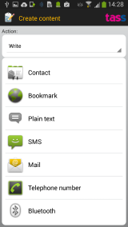

Permissions description
Choose content

Here you can select the content type you would like to put on your NFC tag. The following types are available:
- Contact: Take a contact from your contact list and store it as a vCard on the NFC item.
- URL: Select a bookmark from your browser bookmarks or enter your own http URL
- Plain text: Type some text.
- SMS: Type phone number and content for an SMS message to be sent when somebody reads the NFC item it is written on.
In the Standard and Pro editions of TagWriter, the following additional content can be written
- E-mail: Type destination address, subject and e-mail body for an E-mail message to be sent when somebody reads the NFC item it is written on.
- Telephone: Type a phone number to be called when somebody reads the NFC item it is written on.
- Bluetooth: Enter MAC address and name of a Bluetooth device. This can be used to facilitate quick pairing when somebody reads the NFC item it is written on.
- URI: You can type any URI here, with any scheme.